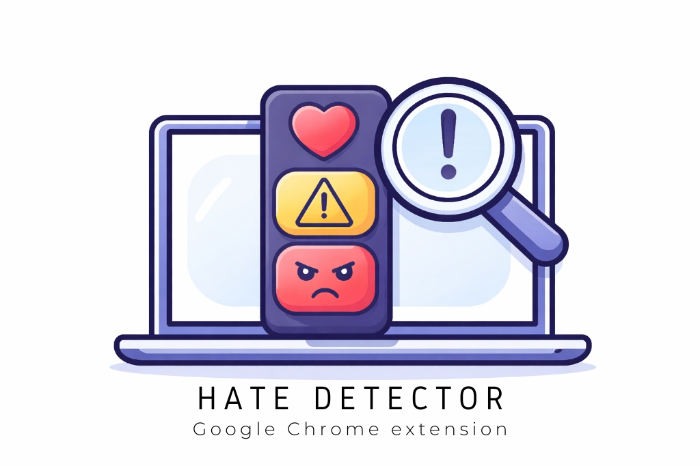

×

Hate Detector 1.0.3
Detector automático de lenguaje de odio basado en arquitectura BERT.
Proyecto INGFIN 03/2025
Directora: C. Martínez-Araneda, Directora alterna: Mariella Gutiérrez V., Colaboradora: Alejandra Segura N., Estudiante colaborador: Elias Pérez M.
Modelos Utilizados:
-
LGBeTO: Martínez-Araneda, C., Gutiérrez V., M., Gómez M., P., Maldonado M., D., Segura N., A., & Vidal-Castro, C. (2025). LGBeTO_detection_Model (Revision a8b5b38). Hugging Face.
🔗 doi.org/10.57967/hf/5406
-
SinOdio BETO: Dromundo, A. (2025). SinOdio BETO: Detector de Discurso de Odio para Español Latinoamericano. HuggingFace.
🔗 Enlace a HuggingFace
Facultad de Ingeniería - 2026